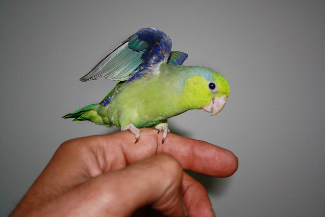

На протяжении тысяч лет человечество стремилось в небеса, желая уподобиться птицам. Многие великие умы, от Леонардо да Винчи до братьев Райт, проектировали самые разнообразные летательные аппараты, одни из которых так и остались на бумаге, а другие стали прародителями современных самолетов и вертолетов. Сейчас полет для человека не составляет труда — купил билет на самолет и вуаля. Большинство из нас даже не задумывается о том, как работает эта огромная металлическая птица, способная перенести нас с одного континента на другой. Правда между современными самолетами и реальными птицами общего не так и много, но с разрабатываемыми автономными роботами ситуация немного иная. Многие ученые пытаются создать робота-птицу, а дабы это начинание было успешным, необходимо понимать не только как птицы летают, но и как приземляются. Сегодня мы с вами познакомимся с исследованием, в котором выпускники Стэнфордского университета подробно изучили механизм посадки попугайчика по имени Гэри и его сородичей. Как птицы приземляются, как они понимают, что могут или не могут приземлиться на той или иной поверхности, и какова кинематика их конечностей во время посадки? На эти и другие вопросы мы найдем ответы в докладе исследователей. Поехали.
Основа исследования
Чем отличаются современные летательные аппараты от птиц в аспекте посадки? Боингу 777, например, нужна взлетно-посадочная полоса длиной минимум 2500 м, вертолету нужна ровная (желательно) поверхность, как и коптерам. Птицы, в свою очередь, не ограничены в геометрии посадочного полотна и могут приземлиться практически на любой поверхности (если рассматривать птиц в целом, а не отдельно взятый вид). Если же говорить об автономных роботах, то их возможности в плане посадки весьма ограничены. Некоторые из них могут успешно садиться на специально спроектированные поверхности, но это не идет ни в какое сравнение с обыкновенным дятлом, который может приземлиться на вертикальной, наклонной, горизонтальной поверхностях, лишь бы было за что коготками зацепиться.
Мне и так удобно (муравьиный дятел / Melanerpes formicivorus).
Исследователи отмечают, что их предшественники уже проводили некоторые исследования, которые дали количественную оценку динамики ног и крыльев птиц во время посадки. Однако остается неясным, как эта динамика меняется в зависимости от разного типа поверхностей, служащих местом посадки. Ведь важна не только геометрия области посадки, но и текстура поверхности.
Любопытно еще и то, что предыдущие исследования проводились не на живых птицах, следовательно, полноценно оценить силу захвата лапок и когтей на практике не представлялось возможным. Оттого и остались неосвещенными некоторые вопросы: как именно птицы понимают, что место посадки подходящее; какая динамика конечностей в момент касания и захвата; почему для птиц посадка на самые разные поверхности это плевое дело и т.д.
В рассматриваемом нами сегодня труде исследователи решили проверить механизмы и динамику приземления древесных птиц, проведя наблюдения за воробьиными попугайчиками Лессона (Forpus coelestis).
Воробьиный попугайчик Лессона.
Подопытные добровольно приземлялись на жердочки с различной геометрией и текстурой. Всего было 9 вариантов: 3 «естественных», 3 с измененным диаметром и 3 с измененной текстурой. «Естественные» варианты названы так, поскольку жердочки были сделаны из настоящих веточек (19 мм в диаметре) трех разных деревьев: дуб калифорнийский — поверхность шероховатая в разных участках одной ветки; сейба великолепная — поверхность относительно гладкая, ветки мягкие; османтус душистый — поверхность продольно шершавая, ветки жесткие. Для опытов с измененным диаметром жердочки в качестве материала были использованы обычные березовые нагели разного диаметра: 38 мм — слишком большой диаметр для данного вида попугаев; 19 мм — попугай может выполнить частичный захват (передние и задние пальцы не соприкасаются); 6 мм — попугай может выполнить полный захват (передние и задние пальцы соприкасаются). Для опытов с разными текстурами березовую жердочку диаметром 19 мм обернули в три разных материала: пена — мягкая и упругая текстура; тефлон — скользкая текстура; наждачная бумага — грубая и шероховатая текстура.
Было проведено трехмерное структурно-световое сканирование каждого из вариантов жердочки, что позволило количественно описать текстуру поверхности каждой из них и воссоздать профили поверхности (1А). Чтобы оценить влияние этих текстурных особенностей на взаимодействие поверхности жердочки и стопы попугая, исследователи провели тесты сопротивления пальцев и когтей, чтобы измерить силы трения для каждой поверхности. Также была оценена и сила давления когтей, чтобы измерить деформацию поверхности (1B).
На схеме 1С мы видим, что все тесты проводились под пристальным взглядом нескольких скоростных камер, а жердочки были распилены пополам. К каждой половинке присоединен датчики силы и момента силы.
Результаты исследования
Прежде всего рассмотрим динамику крыльев и лапок во время посадки.
Во всех тестах со всеми вариантами посадочной поверхности подопытные демонстрировали одинаковую классическую динамику. Посадка начинается с торможения крыльями (воздушная фаза), после чего лапки поглощают оставшийся импульс при контакте с жердочкой (фаза поглощения). Контакт осуществлялся обеими лапками с временной задержкой между ними в несколько миллисекунд, т.е. первой с жердочкой контактировала предпочтительная лапка:
- подопытный №1 — в 100% случаев правая лапка;
- подопытный №2 — в 83% случаев левая лапка;
- подопытный №3 — в 85% случаев левая лапка.
После контакта наступает фаза закрепления, когда попугайчик более надежно и крепко фиксируют пальцы вокруг жердочки. Следом следует этап, которые встречается не всегда, но часто, — фаза корректировки, когда они тем или иным образом меняют положение лапок или пальцев на жердочке.
Иногда попугаи, видимо переоценив или недооценив условия теста, немного недолетали/перелетали место посадки (2В), что приводило к большей дисперсии угла наклона стопы, при котором они устанавливают статическое сцепление.
Любопытно, что при наличии некоторой вариативности в показателях силы лапок (2В) и направления (2C) средние значения силы посадки остаются удивительно одинаковыми для разных жердочек.
Различие показателей, замеченные во время приземления, может быть объяснено стратегией приземления попугаев. Есть теория, в соответствии с которой птицы контролируют свою посадку, визуально оценивая время контакта с поверхностью, τ(t). Для успешного приземления они регулируют свою скорость захода на посадку, чтобы поддерживать постоянную τ(t). Если немного детальнее: τ определяется как расстояние до жердочки (s), деленное на скорость приближения (v).
Если птица тормозит с постоянным замедлением (а), то τ = s/v = 0.5at2/at = 0.5t, в таком случае τ(t) = 0.5.
Если τ(t) < 0.5, торможение будет уменьшаться до момента контакта с жердочкой. А если 0.5 < τ(t) < 1, торможение будет увеличиваться, пока птица не совершит контролируемое столкновение с посадочной поверхностью.
Учитывая вышеописанную кинематику попугаи поддерживают относительно постоянные значения τ (2Е), соответствующие значениям контролируемых столкновений (2F). Самое малое среднее значение τ = 0.80 наблюдалось в тестах с жердочкой с наименьшим диаметром (6 мм). А самое большое значение τ = 0.94 было в тестах с жердочкой, покрытой пеной. Это говорит о том, что попугаи увеличивают торможение, когда приближаются к мягкой посадочной поверхности.
Наличие высокого показателя τ (т.е. больше 0.5) во всех тестах со всеми типами поверхности говорит о том, что в момент касания птицы еще не завершили посадку.
Немного ознакомившись с динамикой посадки, перейдем к кинематике стоп и когтей наших пернатых друзей.
Учитывая однотипность поведения во время посадки вне зависимости от типа поверхности, исследователи сделали вывод, что птицы реагируют на различия в текстуре и геометрии посадочной жердочки именно лапками и когтями, а не крыльями.Звучит логично, не правда ли? Но, сюрприз, это не совсем так.
Кинематика стопы продемонстрировала сходный стереотипный (одинаковый для всех типов жердочек) набор посадочных этапов (3A, 3B).

Изображение №3
Во время полета стопы находятся в закрытом состоянии (фаза отдыха), далее они начинают открываться примерно за 100 мс до касания с жердочкой (фаза раскрытия длительностью 40 ± 8 мс), далее идет «открытая» фаза, когда в течение 21 ± 7 мс стопа полностью раскрыта.
Непосредственно перед контактом пальцы начинают сближаться (фаза предварительного формирования захвата, длительность 31 ± 10 мс). После установления контакта с поверхностью пальцы начинают обхват жердочки (фаза обхвата, длительность 19 ± 7 мс). Заключительная фаза это захват когтями длительностью 185 ± 11 мс.
Различия в текстуре и геометрии жердочки влияют исключительно на кинематику этапов посадки после контакта с поверхностью (3С). До соприкосновения кинематика стопы и когтя остается неизменной во всех тестах, даже когда стопы начинают закрываться во время фазы предварительного формирования захвата.
Другими словами, если бы птицы реагировали на разницу в геометрии и текстуре посадочной поверхности, то изменения кинематики наблюдались бы еще во время фаз до контакта, т.е. еще в воздухе. Вместо этого попугаи последовательно начинают предварительное формирование захвата за 30 мс до приземления (3D). Это наталкивает на предположение, что у них есть прогнозируемые варианты решения задачи по посадке на необычной поверхности.
Для птицы важно сохранять большой угол между когтями до самого момента контакта, чтобы предотвратить их повреждение. Далее степень захвата определяется диаметром жердочки (3Е). Полный захват происходит в случае жердочек диаметром 6 мм, т.е. попугаи могут полностью использовать всю свою силу пальцев и когтей для стабилизации.
Важно отметить, что в момент контакта когти и/или лапки могут соскальзывать с жердочек, ввиду гладкой поверхности. В результате угол захвата когтя может изменяться. Принимая во внимание, что стадия захвата когтями может длиться более 100 мс, отдельно взятые движения отдельно взятого когтя (3F) могут происходить невероятно быстро (1-2 мс).
Сверхскоростные движения когтями, вероятно, не регулируются только мышечным сокращением, как предполагают исследователи. Удивительно и то, что среди позвоночных самые быстрые движения мышц в 5-10 раз медленнее, чем эти супербыстрые движения когтей (например, мышцы рук человека — 50 мс, грудная мышца колибри — 8 мс). Из этого можно сделать вывод, что скорость движений когтя попугая зависит от высвобождения энергии, запасенной в упругом сухожилие, и от низкой инерции когтя. Столь быстрые движения когтей позволяют попугаям моментально приспосабливать свой захват в зависимости от геометрии и текстуры поверхности посадки.